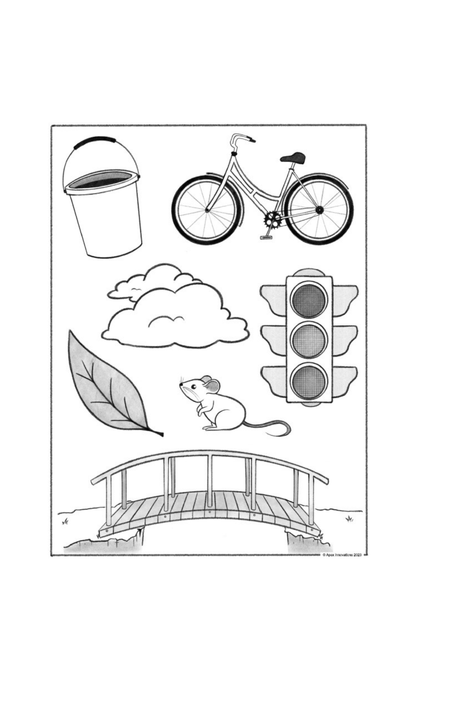

NIHSS Score Calculator
Interactive Calculator
Total NIHSS Score
0
NO STROKE (0)
NIHSS Bedside Assessment Cards
Diagnostic Visuals
Ask the patient to identify the objects, describe what is happening in the picture, read the sentences, or read the words listed.
NIH Stroke Scale (NIHSS) Scoring Sheet
Bedside Quick Reference Card
| NIHSS Item | Scoring Definitions & Clinical Criteria |
|---|---|
| 1a. Level of Consciousness | 0 = Alert; 1 = Not alert, arousable by minor stimulation; 2 = Not alert, requires repeated stimulation; 3 = Comatose, reflex motor response only. |
| 1b. LOC Questions | Ask month and age: 0 = Answers both correctly; 1 = Answers one correctly; 2 = Answers neither correctly (or aphasic/intubated). |
| 1c. LOC Commands | Ask to open/close eyes and grip/release non-paretic hand: 0 = Performs both correctly; 1 = Performs one correctly; 2 = Performs neither. |
| 2. Best Gaze | Horizontal eye movements: 0 = Normal; 1 = Partial gaze palsy; 2 = Forced deviation or total gaze palsy. |
| 3. Visual Fields | Confrontation: 0 = No visual loss; 1 = Partial hemianopia; 2 = Complete hemianopia; 3 = Bilateral hemianopia (blind). |
| 4. Facial Palsy | Show teeth, raise eyebrows, squeeze eyes shut: 0 = Normal; 1 = Minor paralysis; 2 = Partial paralysis; 3 = Complete unilateral paralysis. |
| 5a / 5b. Motor Arm (L/R) | Hold arm at 90° (sitting) or 45° (supine) for 10s: 0 = No drift; 1 = Drift before 10s, does not hit bed; 2 = Some effort against gravity, hits bed; 3 = No effort against gravity, drops; 4 = No movement; UN = Untestable. |
| 6a / 6b. Motor Leg (L/R) | Hold leg at 30° (supine) for 5s: 0 = No drift; 1 = Drift before 5s, does not hit bed; 2 = Some effort against gravity, hits bed; 3 = No effort against gravity, drops; 4 = No movement; UN = Untestable. |
| 7. Limb Ataxia | Finger-to-nose and heel-to-shin (test bilaterally): 0 = Absent / Normal; 1 = Present in one limb; 2 = Present in two limbs. (Score 0 if paralyzed). |
| 8. Sensory | Pinprick test on face, arms, trunk, and legs: 0 = Normal, no sensory loss; 1 = Mild-to-moderate loss; 2 = Severe-to-complete sensory loss. |
| 9. Best Language | Name items, describe picture, read sentences: 0 = Normal, no aphasia; 1 = Mild-to-moderate aphasia; 2 = Severe aphasia; 3 = Mute, global aphasia. |
| 10. Dysarthria | Read words: 0 = Normal pronunciation; 1 = Mild-to-moderate slurring; 2 = Severe slurring, incomprehensible; UN = Untestable (e.g. intubated). |
| 11. Extinction / Inattention | Simultaneous bilateral visual/tactile stimulation: 0 = Normal, no inattention; 1 = Partial inattention (one modality); 2 = Profound neglect. |
📊 Stroke Severity Classifications
- • 0: No Stroke Symptoms
- • 1 - 4: Minor Stroke
- • 5 - 15: Moderate Stroke
- • 16 - 20: Moderate-to-Severe Stroke
- • 21 - 42: Severe Stroke
⚠️ Clinical Triages & Warnings
- Large Vessel Occlusion (LVO): NIHSS ≥ 6 has a high positive predictive value for LVO. Triage immediately for CTA and EVT screening.
- tPA Bleeding Risk: NIHSS > 25 indicates very large infarctions with significantly elevated risk of symptomatic intracranial hemorrhage.
- Minor Stroke DAPT: If NIHSS ≤ 5 (and non-cardioembolic), screen for dual antiplatelet therapy (DAPT) starting within 24 hours (POINT/CHANCE).